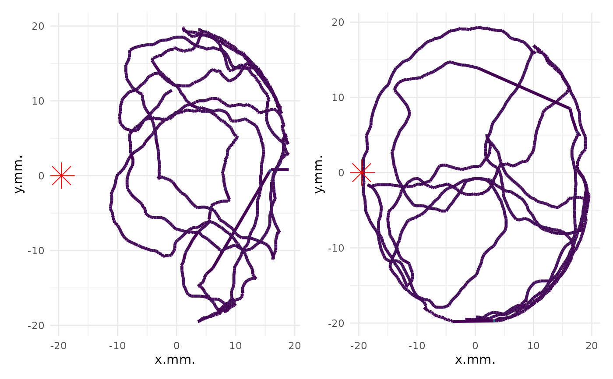

Plot individual map
plot_ind_mitemap.RdPlot individual map
Arguments
- MiteMap
MiteMap (required) The result of import_mitemap ($resulting_data) for raw_data
- ind_index
(required, vector of int, default = c(1)) The index numbers of the file(s) (individual(s)) you want to plot
- time_animation
(logical, default FALSE) Does the plot is animate using gganimate ?
- add_base_circle
(logical, default FALSE) Does the base circle is plot ?
- center_base_circle
(int) The center of the base circle. Only used if
center_base_circleis TRUE.- breaks_animation
(int) The number of breaks in animation. Only used if
time_animationis TRUE.- diameter_base_circle
(int) The diameter of the base circle. Only used if
center_base_circleis TRUE.- npoints_base_circle
(int) The number of point to draw the base circle. Only used if
center_base_circleis TRUE.- linewidth
(int) The linewidth of the path
- alpha_shadow
(int 0,1) Alpha value (transparency) for shadow path. Only used if time_animation` is TRUE.
Examples
MM <- filter_mitemap(MM_example,
center_x = -28, center_y = -22, max_x_value = 52, max_y_value = 52
)
#> Row removed when clearing the first secondes: 536
#> Row removed when clearing bad x range: 16860
#> Row removed when clearing bad y range: 0
#> Row removed when clearing bad x values: 1
#> Row removed when clearing bad y values: 0
#> Row removed when clearing for run with times sup to maximum_time: 1002
p_l <- plot_ind_mitemap(MM, ind_index = c(1, 2))
p_l[[1]] + p_l[[2]] & theme(legend.position = "none")
#> Error in ggplot_add(object, p, objectname): Can't add `p_l[[2]]` to a <ggplot> object.
p_l_base_c <- plot_ind_mitemap(MM, add_base_circle = TRUE, linewidth = 1.7)
p_l_base_c[[1]] + scale_color_gradient(name = "Speed", trans = "log10", low = "cyan", high = "red")
#> Scale for colour is already present.
#> Adding another scale for colour, which will replace the existing scale.
#> Warning: log-10 transformation introduced infinite values.

p_l_anim <- plot_ind_mitemap(MM, time_animation = TRUE, breaks_animation = 15)
p_l_anim[[1]]
#> [1] "./gganim_plot0001.png" "./gganim_plot0002.png" "./gganim_plot0003.png"
#> [4] "./gganim_plot0004.png" "./gganim_plot0005.png" "./gganim_plot0006.png"
#> [7] "./gganim_plot0007.png" "./gganim_plot0008.png" "./gganim_plot0009.png"
#> [10] "./gganim_plot0010.png" "./gganim_plot0011.png" "./gganim_plot0012.png"
#> [13] "./gganim_plot0013.png" "./gganim_plot0014.png" "./gganim_plot0015.png"
#> [16] "./gganim_plot0016.png" "./gganim_plot0017.png" "./gganim_plot0018.png"
#> [19] "./gganim_plot0019.png" "./gganim_plot0020.png" "./gganim_plot0021.png"
#> [22] "./gganim_plot0022.png" "./gganim_plot0023.png" "./gganim_plot0024.png"
#> [25] "./gganim_plot0025.png" "./gganim_plot0026.png" "./gganim_plot0027.png"
#> [28] "./gganim_plot0028.png" "./gganim_plot0029.png" "./gganim_plot0030.png"
#> [31] "./gganim_plot0031.png" "./gganim_plot0032.png" "./gganim_plot0033.png"
#> [34] "./gganim_plot0034.png" "./gganim_plot0035.png" "./gganim_plot0036.png"
#> [37] "./gganim_plot0037.png" "./gganim_plot0038.png" "./gganim_plot0039.png"
#> [40] "./gganim_plot0040.png" "./gganim_plot0041.png" "./gganim_plot0042.png"
#> [43] "./gganim_plot0043.png" "./gganim_plot0044.png" "./gganim_plot0045.png"
#> [46] "./gganim_plot0046.png" "./gganim_plot0047.png" "./gganim_plot0048.png"
#> [49] "./gganim_plot0049.png" "./gganim_plot0050.png" "./gganim_plot0051.png"
#> [52] "./gganim_plot0052.png" "./gganim_plot0053.png" "./gganim_plot0054.png"
#> [55] "./gganim_plot0055.png" "./gganim_plot0056.png" "./gganim_plot0057.png"
#> [58] "./gganim_plot0058.png" "./gganim_plot0059.png" "./gganim_plot0060.png"
#> [61] "./gganim_plot0061.png" "./gganim_plot0062.png" "./gganim_plot0063.png"
#> [64] "./gganim_plot0064.png" "./gganim_plot0065.png" "./gganim_plot0066.png"
#> [67] "./gganim_plot0067.png" "./gganim_plot0068.png" "./gganim_plot0069.png"
#> [70] "./gganim_plot0070.png" "./gganim_plot0071.png" "./gganim_plot0072.png"
#> [73] "./gganim_plot0073.png" "./gganim_plot0074.png" "./gganim_plot0075.png"
#> [76] "./gganim_plot0076.png" "./gganim_plot0077.png" "./gganim_plot0078.png"
#> [79] "./gganim_plot0079.png" "./gganim_plot0080.png" "./gganim_plot0081.png"
#> [82] "./gganim_plot0082.png" "./gganim_plot0083.png" "./gganim_plot0084.png"
#> [85] "./gganim_plot0085.png" "./gganim_plot0086.png" "./gganim_plot0087.png"
#> [88] "./gganim_plot0088.png" "./gganim_plot0089.png" "./gganim_plot0090.png"
#> [91] "./gganim_plot0091.png" "./gganim_plot0092.png" "./gganim_plot0093.png"
#> [94] "./gganim_plot0094.png" "./gganim_plot0095.png" "./gganim_plot0096.png"
#> [97] "./gganim_plot0097.png" "./gganim_plot0098.png" "./gganim_plot0099.png"
#> [100] "./gganim_plot0100.png"
#> attr(,"frame_vars")
#> frame nframes progress frame_along
#> 1 1 100 0.01 96.5
#> 2 2 100 0.02 123.5
#> 3 3 100 0.03 150.5
#> 4 4 100 0.04 177.5
#> 5 5 100 0.05 204.5
#> 6 6 100 0.06 231.5
#> 7 7 100 0.07 258.5
#> 8 8 100 0.08 285.5
#> 9 9 100 0.09 312.5
#> 10 10 100 0.10 339.5
#> 11 11 100 0.11 366.5
#> 12 12 100 0.12 393.5
#> 13 13 100 0.13 420.5
#> 14 14 100 0.14 447.5
#> 15 15 100 0.15 474.5
#> 16 16 100 0.16 501.5
#> 17 17 100 0.17 528.5
#> 18 18 100 0.18 555.5
#> 19 19 100 0.19 582.5
#> 20 20 100 0.20 609.5
#> 21 21 100 0.21 636.5
#> 22 22 100 0.22 663.5
#> 23 23 100 0.23 690.5
#> 24 24 100 0.24 717.5
#> 25 25 100 0.25 744.5
#> 26 26 100 0.26 771.5
#> 27 27 100 0.27 798.5
#> 28 28 100 0.28 825.5
#> 29 29 100 0.29 852.5
#> 30 30 100 0.30 879.5
#> 31 31 100 0.31 906.5
#> 32 32 100 0.32 933.5
#> 33 33 100 0.33 960.5
#> 34 34 100 0.34 987.5
#> 35 35 100 0.35 1014.5
#> 36 36 100 0.36 1041.5
#> 37 37 100 0.37 1068.5
#> 38 38 100 0.38 1095.5
#> 39 39 100 0.39 1122.5
#> 40 40 100 0.40 1149.5
#> 41 41 100 0.41 1176.5
#> 42 42 100 0.42 1203.5
#> 43 43 100 0.43 1230.5
#> 44 44 100 0.44 1257.5
#> 45 45 100 0.45 1284.5
#> 46 46 100 0.46 1311.5
#> 47 47 100 0.47 1338.5
#> 48 48 100 0.48 1365.5
#> 49 49 100 0.49 1392.5
#> 50 50 100 0.50 1419.5
#> 51 51 100 0.51 1446.5
#> 52 52 100 0.52 1473.5
#> 53 53 100 0.53 1500.5
#> 54 54 100 0.54 1527.5
#> 55 55 100 0.55 1554.5
#> 56 56 100 0.56 1581.5
#> 57 57 100 0.57 1608.5
#> 58 58 100 0.58 1635.5
#> 59 59 100 0.59 1662.5
#> 60 60 100 0.60 1689.5
#> 61 61 100 0.61 1716.5
#> 62 62 100 0.62 1743.5
#> 63 63 100 0.63 1770.5
#> 64 64 100 0.64 1797.5
#> 65 65 100 0.65 1824.5
#> 66 66 100 0.66 1851.5
#> 67 67 100 0.67 1878.5
#> 68 68 100 0.68 1905.5
#> 69 69 100 0.69 1932.5
#> 70 70 100 0.70 1959.5
#> 71 71 100 0.71 1986.5
#> 72 72 100 0.72 2013.5
#> 73 73 100 0.73 2040.5
#> 74 74 100 0.74 2067.5
#> 75 75 100 0.75 2094.5
#> 76 76 100 0.76 2121.5
#> 77 77 100 0.77 2148.5
#> 78 78 100 0.78 2175.5
#> 79 79 100 0.79 2202.5
#> 80 80 100 0.80 2229.5
#> 81 81 100 0.81 2256.5
#> 82 82 100 0.82 2283.5
#> 83 83 100 0.83 2310.5
#> 84 84 100 0.84 2337.5
#> 85 85 100 0.85 2364.5
#> 86 86 100 0.86 2391.5
#> 87 87 100 0.87 2418.5
#> 88 88 100 0.88 2445.5
#> 89 89 100 0.89 2472.5
#> 90 90 100 0.90 2499.5
#> 91 91 100 0.91 2526.5
#> 92 92 100 0.92 2553.5
#> 93 93 100 0.93 2580.5
#> 94 94 100 0.94 2607.5
#> 95 95 100 0.95 2634.5
#> 96 96 100 0.96 2661.5
#> 97 97 100 0.97 2688.5
#> 98 98 100 0.98 2715.5
#> 99 99 100 0.99 2742.5
#> 100 100 100 1.00 2769.5
#> frame_source
#> 1 /tmp/RtmppdiMr5/20c0512039b8/gganim_plot0001.png
#> 2 /tmp/RtmppdiMr5/20c0512039b8/gganim_plot0002.png
#> 3 /tmp/RtmppdiMr5/20c0512039b8/gganim_plot0003.png
#> 4 /tmp/RtmppdiMr5/20c0512039b8/gganim_plot0004.png
#> 5 /tmp/RtmppdiMr5/20c0512039b8/gganim_plot0005.png
#> 6 /tmp/RtmppdiMr5/20c0512039b8/gganim_plot0006.png
#> 7 /tmp/RtmppdiMr5/20c0512039b8/gganim_plot0007.png
#> 8 /tmp/RtmppdiMr5/20c0512039b8/gganim_plot0008.png
#> 9 /tmp/RtmppdiMr5/20c0512039b8/gganim_plot0009.png
#> 10 /tmp/RtmppdiMr5/20c0512039b8/gganim_plot0010.png
#> 11 /tmp/RtmppdiMr5/20c0512039b8/gganim_plot0011.png
#> 12 /tmp/RtmppdiMr5/20c0512039b8/gganim_plot0012.png
#> 13 /tmp/RtmppdiMr5/20c0512039b8/gganim_plot0013.png
#> 14 /tmp/RtmppdiMr5/20c0512039b8/gganim_plot0014.png
#> 15 /tmp/RtmppdiMr5/20c0512039b8/gganim_plot0015.png
#> 16 /tmp/RtmppdiMr5/20c0512039b8/gganim_plot0016.png
#> 17 /tmp/RtmppdiMr5/20c0512039b8/gganim_plot0017.png
#> 18 /tmp/RtmppdiMr5/20c0512039b8/gganim_plot0018.png
#> 19 /tmp/RtmppdiMr5/20c0512039b8/gganim_plot0019.png
#> 20 /tmp/RtmppdiMr5/20c0512039b8/gganim_plot0020.png
#> 21 /tmp/RtmppdiMr5/20c0512039b8/gganim_plot0021.png
#> 22 /tmp/RtmppdiMr5/20c0512039b8/gganim_plot0022.png
#> 23 /tmp/RtmppdiMr5/20c0512039b8/gganim_plot0023.png
#> 24 /tmp/RtmppdiMr5/20c0512039b8/gganim_plot0024.png
#> 25 /tmp/RtmppdiMr5/20c0512039b8/gganim_plot0025.png
#> 26 /tmp/RtmppdiMr5/20c0512039b8/gganim_plot0026.png
#> 27 /tmp/RtmppdiMr5/20c0512039b8/gganim_plot0027.png
#> 28 /tmp/RtmppdiMr5/20c0512039b8/gganim_plot0028.png
#> 29 /tmp/RtmppdiMr5/20c0512039b8/gganim_plot0029.png
#> 30 /tmp/RtmppdiMr5/20c0512039b8/gganim_plot0030.png
#> 31 /tmp/RtmppdiMr5/20c0512039b8/gganim_plot0031.png
#> 32 /tmp/RtmppdiMr5/20c0512039b8/gganim_plot0032.png
#> 33 /tmp/RtmppdiMr5/20c0512039b8/gganim_plot0033.png
#> 34 /tmp/RtmppdiMr5/20c0512039b8/gganim_plot0034.png
#> 35 /tmp/RtmppdiMr5/20c0512039b8/gganim_plot0035.png
#> 36 /tmp/RtmppdiMr5/20c0512039b8/gganim_plot0036.png
#> 37 /tmp/RtmppdiMr5/20c0512039b8/gganim_plot0037.png
#> 38 /tmp/RtmppdiMr5/20c0512039b8/gganim_plot0038.png
#> 39 /tmp/RtmppdiMr5/20c0512039b8/gganim_plot0039.png
#> 40 /tmp/RtmppdiMr5/20c0512039b8/gganim_plot0040.png
#> 41 /tmp/RtmppdiMr5/20c0512039b8/gganim_plot0041.png
#> 42 /tmp/RtmppdiMr5/20c0512039b8/gganim_plot0042.png
#> 43 /tmp/RtmppdiMr5/20c0512039b8/gganim_plot0043.png
#> 44 /tmp/RtmppdiMr5/20c0512039b8/gganim_plot0044.png
#> 45 /tmp/RtmppdiMr5/20c0512039b8/gganim_plot0045.png
#> 46 /tmp/RtmppdiMr5/20c0512039b8/gganim_plot0046.png
#> 47 /tmp/RtmppdiMr5/20c0512039b8/gganim_plot0047.png
#> 48 /tmp/RtmppdiMr5/20c0512039b8/gganim_plot0048.png
#> 49 /tmp/RtmppdiMr5/20c0512039b8/gganim_plot0049.png
#> 50 /tmp/RtmppdiMr5/20c0512039b8/gganim_plot0050.png
#> 51 /tmp/RtmppdiMr5/20c0512039b8/gganim_plot0051.png
#> 52 /tmp/RtmppdiMr5/20c0512039b8/gganim_plot0052.png
#> 53 /tmp/RtmppdiMr5/20c0512039b8/gganim_plot0053.png
#> 54 /tmp/RtmppdiMr5/20c0512039b8/gganim_plot0054.png
#> 55 /tmp/RtmppdiMr5/20c0512039b8/gganim_plot0055.png
#> 56 /tmp/RtmppdiMr5/20c0512039b8/gganim_plot0056.png
#> 57 /tmp/RtmppdiMr5/20c0512039b8/gganim_plot0057.png
#> 58 /tmp/RtmppdiMr5/20c0512039b8/gganim_plot0058.png
#> 59 /tmp/RtmppdiMr5/20c0512039b8/gganim_plot0059.png
#> 60 /tmp/RtmppdiMr5/20c0512039b8/gganim_plot0060.png
#> 61 /tmp/RtmppdiMr5/20c0512039b8/gganim_plot0061.png
#> 62 /tmp/RtmppdiMr5/20c0512039b8/gganim_plot0062.png
#> 63 /tmp/RtmppdiMr5/20c0512039b8/gganim_plot0063.png
#> 64 /tmp/RtmppdiMr5/20c0512039b8/gganim_plot0064.png
#> 65 /tmp/RtmppdiMr5/20c0512039b8/gganim_plot0065.png
#> 66 /tmp/RtmppdiMr5/20c0512039b8/gganim_plot0066.png
#> 67 /tmp/RtmppdiMr5/20c0512039b8/gganim_plot0067.png
#> 68 /tmp/RtmppdiMr5/20c0512039b8/gganim_plot0068.png
#> 69 /tmp/RtmppdiMr5/20c0512039b8/gganim_plot0069.png
#> 70 /tmp/RtmppdiMr5/20c0512039b8/gganim_plot0070.png
#> 71 /tmp/RtmppdiMr5/20c0512039b8/gganim_plot0071.png
#> 72 /tmp/RtmppdiMr5/20c0512039b8/gganim_plot0072.png
#> 73 /tmp/RtmppdiMr5/20c0512039b8/gganim_plot0073.png
#> 74 /tmp/RtmppdiMr5/20c0512039b8/gganim_plot0074.png
#> 75 /tmp/RtmppdiMr5/20c0512039b8/gganim_plot0075.png
#> 76 /tmp/RtmppdiMr5/20c0512039b8/gganim_plot0076.png
#> 77 /tmp/RtmppdiMr5/20c0512039b8/gganim_plot0077.png
#> 78 /tmp/RtmppdiMr5/20c0512039b8/gganim_plot0078.png
#> 79 /tmp/RtmppdiMr5/20c0512039b8/gganim_plot0079.png
#> 80 /tmp/RtmppdiMr5/20c0512039b8/gganim_plot0080.png
#> 81 /tmp/RtmppdiMr5/20c0512039b8/gganim_plot0081.png
#> 82 /tmp/RtmppdiMr5/20c0512039b8/gganim_plot0082.png
#> 83 /tmp/RtmppdiMr5/20c0512039b8/gganim_plot0083.png
#> 84 /tmp/RtmppdiMr5/20c0512039b8/gganim_plot0084.png
#> 85 /tmp/RtmppdiMr5/20c0512039b8/gganim_plot0085.png
#> 86 /tmp/RtmppdiMr5/20c0512039b8/gganim_plot0086.png
#> 87 /tmp/RtmppdiMr5/20c0512039b8/gganim_plot0087.png
#> 88 /tmp/RtmppdiMr5/20c0512039b8/gganim_plot0088.png
#> 89 /tmp/RtmppdiMr5/20c0512039b8/gganim_plot0089.png
#> 90 /tmp/RtmppdiMr5/20c0512039b8/gganim_plot0090.png
#> 91 /tmp/RtmppdiMr5/20c0512039b8/gganim_plot0091.png
#> 92 /tmp/RtmppdiMr5/20c0512039b8/gganim_plot0092.png
#> 93 /tmp/RtmppdiMr5/20c0512039b8/gganim_plot0093.png
#> 94 /tmp/RtmppdiMr5/20c0512039b8/gganim_plot0094.png
#> 95 /tmp/RtmppdiMr5/20c0512039b8/gganim_plot0095.png
#> 96 /tmp/RtmppdiMr5/20c0512039b8/gganim_plot0096.png
#> 97 /tmp/RtmppdiMr5/20c0512039b8/gganim_plot0097.png
#> 98 /tmp/RtmppdiMr5/20c0512039b8/gganim_plot0098.png
#> 99 /tmp/RtmppdiMr5/20c0512039b8/gganim_plot0099.png
#> 100 /tmp/RtmppdiMr5/20c0512039b8/gganim_plot0100.png
p_l <- plot_ind_mitemap(MM, ind_index = c(1:6))
(p_l[[1]] + p_l[[2]] + p_l[[3]]) /
(p_l[[4]] + p_l[[5]] + p_l[[6]]) +
plot_layout(guides = "collect") & scale_color_gradient(
name = "Speed", trans = "log1p", low = "cyan", high = "red",
limits = c(
min(unlist(lapply(p_l, function(x) {
min(x$data$dist_from_i_minus_1, na.rm = T)
}))),
max(unlist(lapply(p_l, function(x) {
max(x$data$dist_from_i_minus_1, na.rm = T)
})))
)
)
#> Error in ggplot_add(object, p, objectname): Can't add `p_l[[2]]` to a <ggplot> object.
(p_l[[1]] + p_l[[2]] + p_l[[3]]) /
(p_l[[4]] + p_l[[5]] + p_l[[6]]) +
plot_layout(guides = "collect") & scale_color_viridis_c(name = "Speed", trans = "log1p", limits = c(0, 2))
#> Error in ggplot_add(object, p, objectname): Can't add `p_l[[2]]` to a <ggplot> object.